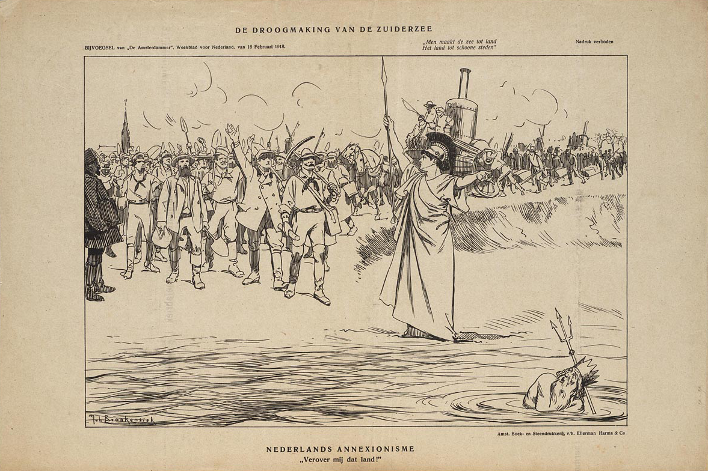
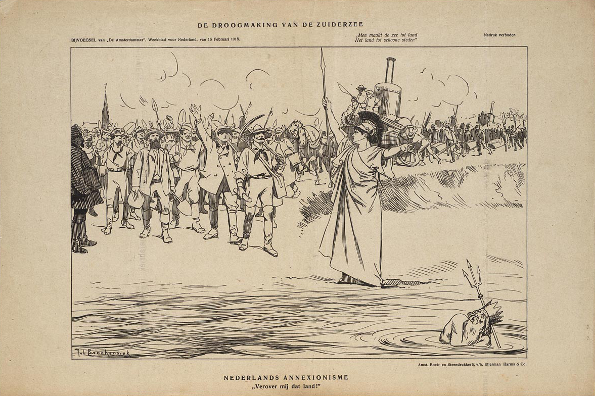

Introduction
It wasn’t until I met my classmates at the art academy, that I really started reflecting on my hometown, the Netherlands. They came from all over the world, Poland, Turkey, Iceland, and many other countries. We found each other in the Hague, and quickly became colleagues, friends, and roommates. While some were oceans away from their homes, I was only a 50-minute train ride away from Amsterdam, the place where I grew up.
Time passed, and I started to forget that I was speaking English, when I heard Dutch all around me. Jokes about the tasteless food, broodjes kaas, and the loud pronunciation of “ggggg”, turned into me explaining to my friends why we pay taxes for water, and them explaining me that places I called a forest (bos), we’re really just parks. I realized it was their perspective from “outside” that eventually got me to look inside. One day, my friend shared a picture out of the airplane window, she captioned it “NL, you artificial country, I’m happy to see you again”. I remember spiralling in my mind for a minute, sure this country was built in a specific way, but was it really so artificial? I felt a bit foolish, disconnected to “my” country’s history.
Although I had learned in school about the dikes that were built, and the land that was created, I had never really perceived the Netherlands as artificial. With this thesis, I want to come to a closer understanding of the Netherlands as an artificial country. I will do this, by researching two leading maps: firstly, the map “Plan van afsluiting en droogmaking der Zuiderzee”, portraying the plan of Dutch politician and engineer Cornelis Lely. While investigating Lely’s plan, I will let myself investigate; what was his attitude towards nature while planning de Zuiderzee-works?
The second map that I will research is “A more natural future for the Netherlands in 2120” published by Wageningen University. I will investigate this map because it was created with the ideology of making the Netherlands climate positive. In my opinion a very interesting combination of “giving back to nature” while still interfering and controlling it. By investigating these maps in a chronological order from past to future, I hope to discover a possible change in attitude towards nature. Through these maps I wish to see how graphic design reflects on this relation with nature, or how it can influence it. While I let the two maps take its lead. I will alongside research examples of speculative maps/design that question the human relation to nature, and our possible future(s) together. To what extend did they interfere in nature, or are they planning to do in the future? And in the end, what does that say about their perception of nature?
1. Sea to land
For centuries, the Dutch landscape has been naturally changing; in some periods the water would rise, and the land would sink, therefor the areas where the water would flow were never consistent. From land to water, from water to land; the Dutch landscape has been in constant shift, and it wasn’t until the Middle Ages that humans started to interfere in this landscape. Around this time people learned to build dikes and later on windmills and other water management techniques. The ever-shifting water levels and areas were problematic for the inhabitants since their living space was in constant threat of flooding. The Zuiderzee was one of these threats. Due to its big cause of floods, the in-land sea was urged to be “tamed”. This would partially happen when the sea reached its final size in the Middle Ages, due to dikes and locks. After this period, the (now)Dutch would slowly make their way in to reclaiming land, reaching their peak around the 19th and 20th century. Their famously rigid polders, and “creation of new land” led to the saying: “God created to earth, but the Dutch created the Netherlands”.
It is sayings such as these, together with other cultural artefacts that show us the connection the Dutch have with water, as well as the pride they have on “defeating” it. It is understandable to me that a folk that had to suffer through endless floods and water disasters, celebrates their safety. However, I find the level of celebration, and the numerous cultural artefacts, songs, poems and sayings fascinating. For me, it is the position the Dutch give to nature; as something less, something to be shaped or conquered only for human benefit. The token in img 1 for instance, is part of a collector’s item association where historical events were depicted. The coin visualizes the impoldering of the Zuiderzee, the text goes “from sea to land”, and the backside shows the four created polders. In img 2 we see a decorative plate with the text “As the Zuiderzee, I belong to history. As a polder land I raise the glory of the Netherlands” expressing the expected prosperity of Prohibition. The plate is designed in “Delfts Blauw”, which is imitated/stolen from China, and way of decorating porcelain and pottery. There are not only artefacts of earlier times, we also see the Dutch celebration of the polder landscape in recent art works. The Dutch government dedicated 800 million euros for a large-scale renovation of the Afsluitdijk in 2017. Some of this money went to artist Daan Roosegaarde, to design an innovation program, in order to celebrate the Afsluitdijk. The government stated that;
“The Afsluitdijk is a national symbol of the Dutch way of dealing with water, in the past, now and in the future. The designs by Daan Roosegaarde emphasize the value of the Afsluitdijk as a national and international calling card for Dutch hydraulic engineering, innovation and Dutch Design. I can recommend everyone to come and experience this for themselves with a visit to this special place.”
The work Roosegaarde made consist of three parts: Gates of Light, Wind Vogel, and Glowing Nature. All three projects play with light and lines and are using nature as a source of light and energy. This is crucial for the future perspective, since the Dutch government aims to have all roads in The Netherlands energy neutral by 2030. The most prominent part of Roosengaarde’s work is the “Gates of Light”(img3), in which he accentuated the contours of the 60 monumental floodgates with reflective tape. The reflection is bright and directed towards the light source, creating an interactive experience for the passenger. Gates of Light generates a game of lines for passengers and shines new light on the original architecture. This the only permanent work of the three, the others were set until 2018. One of them is Wind Vogel(img4), which is kites generating green energy; the movement of the kites create and immersive play of light. The last part of Icoon Afsluitdijk, is Glowing Nature(img5). In this work Roosegaarde combines biology and nature, by working with living algae. Roosegaarde tries to emphasise that humanity can find solutions in nature when it comes sustainable energy and light. Glowing nature, is just like the other two works an interactive experience, working with inspiring, innovating technique’s that makes the viewer think about the future of the public landscape. Even though the Dutch wish to advertise themselves and their national “accomplishments” of a hundred years ago, is odd for me; I think Roosegaarde’s work gives an interesting future perspective, and luckily does not only focus on celebrating the past.

Painters and illustrators took the chance of capturing the closure of the Zuiderzee, some were assigned to visit places along the "doomed inland sea" to capture what would get lost (img 6). One illustration that I personally feel intrigued by is “The Reclamation of the Zuiderzee 16 February 1918”(img 7). This illustration displays the reclamation as a battle which what seems to be a “god of the sea”. The leader shouts, “conquer me that land!” and refers to Dutch annexationism, for me this shows the attitude the Dutch had towards the water, as something to be battled and defeated. This attitude can also be found in old ballads and stories with phrases as “taming the water” and “finally getting her down”. The sea is displayed as a wild animal or a monster, a good example of this we can find in the poem of Joost van den Vondel “To the lion of Holland”. Vondel dedicated this poem in 1641 to Jan Adriaanszoon Leeghwater, to support him in his plan to dry the Haarlemmermeer, a big lake bordering to Amsterdam. In the poem Vondel presents the water as a water wolf - a concept that Leeghwater also used - that attacks the Dutch lion from within.
Some parts of the poem:
“So sadly sigh and cough and discharge with whole chunks
The rotting guts out the throat, into the wave.
What good is it to pluck all east and west with your claws,
If you bite this cruel water wolf's heart”
“With d' Amstellanders on, to emergency aid of their lion.
With close with a dike this animal that comes to tease you.
The frost of the wind flies at it with his windmill blades.
The swift frost knows how to chase the water wolf”
 
